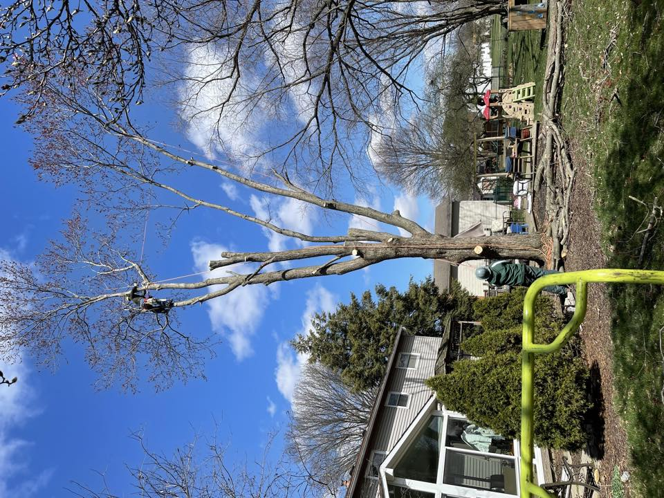
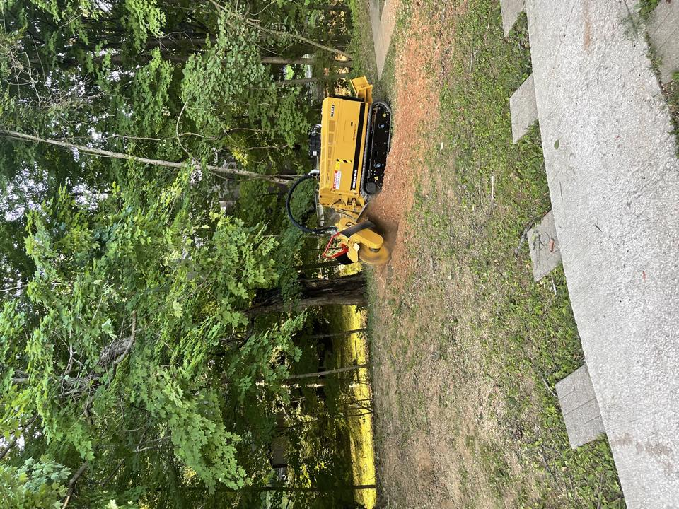
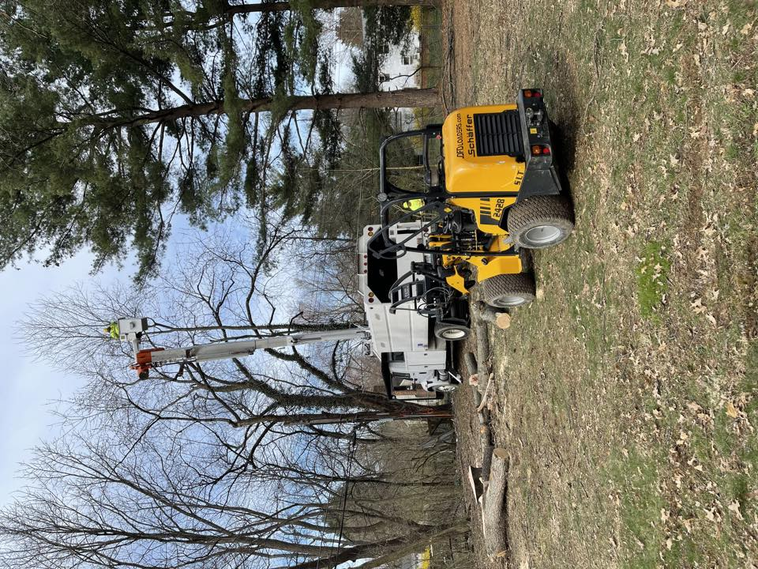
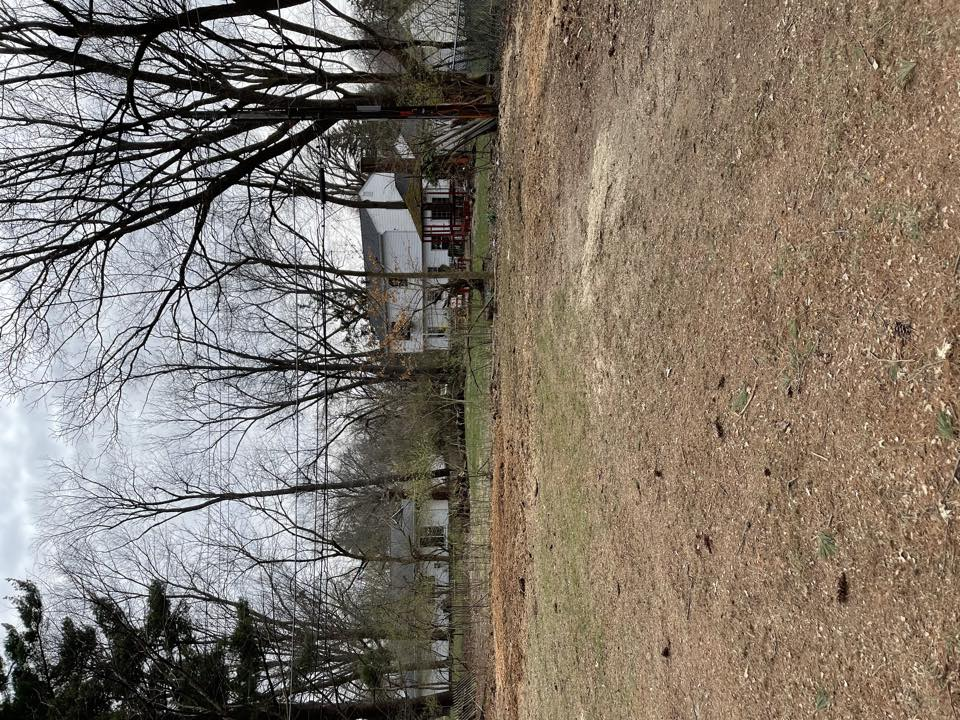
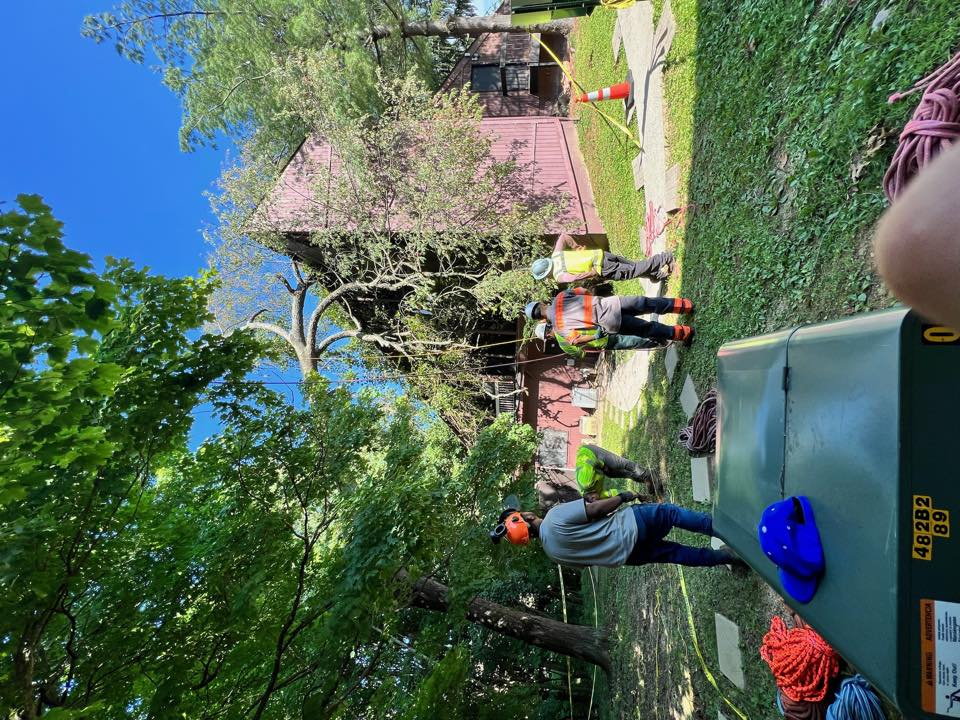
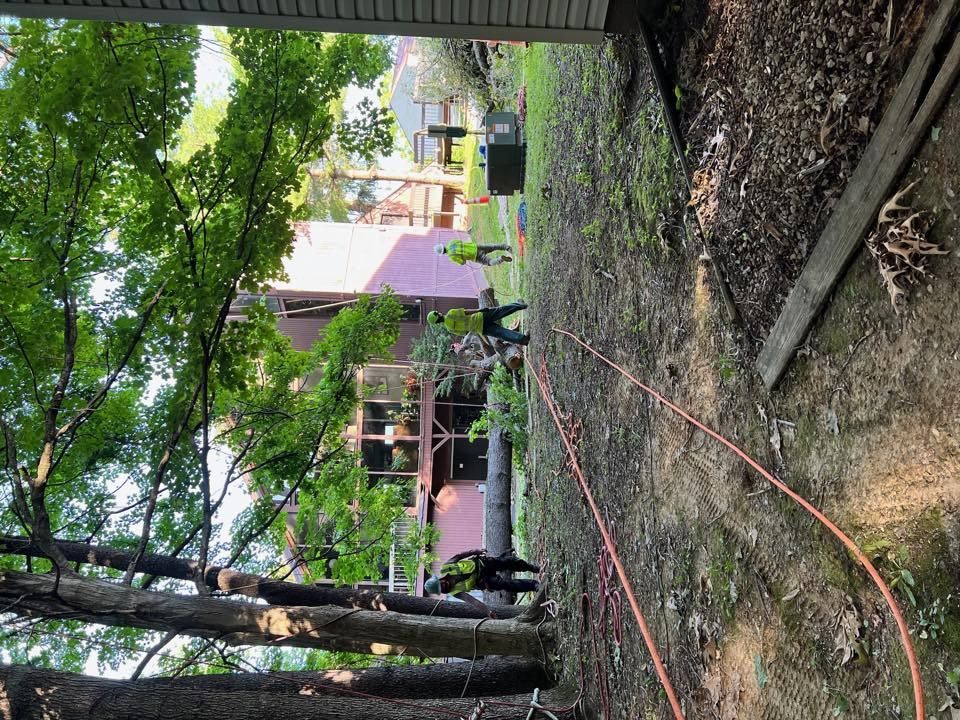
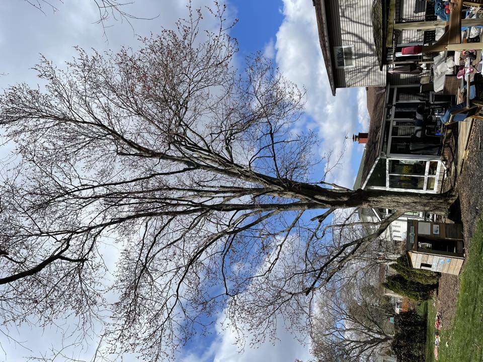
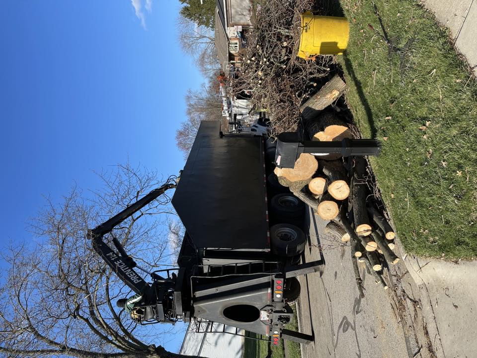
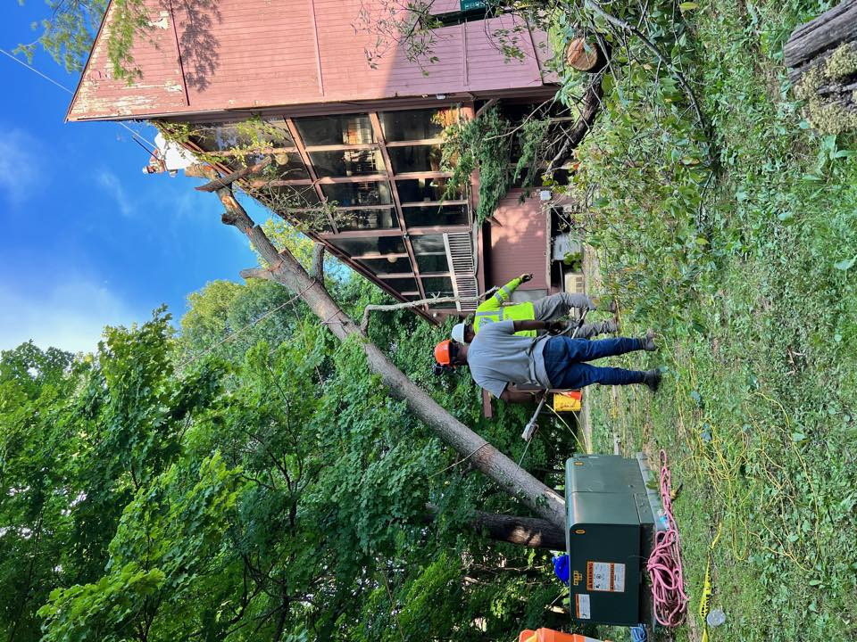

Services & projects
From the first cutto the last stump.
Five services, one family-owned crew from Pickerington. Below: what each job involves, followed by a log of recent projects with our own photos.


Tree removal
Removing a tree can be a difficult process. We have the experience, the equipment and the knowledge to remove it safely, and our whole team is trained to do it efficiently and with minimal impact on your property.
- Large trees close to houses, fences and wires
- Bucket truck where there is access, careful hand work where there isn’t
- Logs loaded out with our grapple truck


Tree trimming & pruning
Trimming or thinning makes your trees healthier and better looking. Cutting out branches and limbs that are dead, dying or growing into each other allows better respiration and gives the tree the strength to withstand strong wind.
- Storm-broken limbs
- Thinning of overgrown crowns
- Personal attention to what you want from your tree


Stump grinding
Our stump grinder goes deep enough into the ground that you can easily plant or replant in the same spot. Grinding the stump also takes away the possibility of disease spreading to nearby plants or trees.
- Deep grinding, ready for replanting
- Removes the chance of disease spreading to nearby trees
- Ask about it together with your tree removal


Lot & land clearing
On clearing jobs we are careful about our equipment and our footprint. We work together with the client to set expectations and deliver the result they want, every step of the way.
- Brush, trees and logs removed
- Loader and grapple truck on site
- Planned with you before we start


Storm response
Storms bring down limbs and whole trees, sometimes onto buildings. Call us and we will respond. In one emergency an apartment complex called after a tree fell on a building, and our team got it done the same day.
- Trees on roofs and buildings
- Broken and hanging limbs
- Cleanup after the removal
Project log
Recent jobs, in order.
Lot / land clearing
We were very careful about our equipment and footprint on this project, and worked together with the client to deliver the result they wanted.

Tree removal
A large tree taken down safely and efficiently, with minimal impact on the property.


Walnut trimming
This walnut had two broken limbs from a storm and had not been trimmed for a while.
Emergency tree removal
An apartment complex called for an immediate removal: a tree had fallen on a building during a storm. Our team responded quickly and got it done that same day.

Stump grinding
Ground deep enough to plant or replant new material in the same area.
FAQ
Good questions.
Which area do you serve?
We are located in Pickerington, Ohio, and cover the city of Columbus within a 30-mile radius.
How do I get an estimate?
Call 614-406-7792, email ajltree1@gmail.com or fill out the quote form with your first and last name, email, cell phone number and the service you need. Estimates are free and done with our ISA Certified Arborist.
Can you plant a new tree where the stump was?
Our stump grinder goes deep enough into the ground that you can easily plant or replant new material in the same area. Grinding the stump also takes away the chance of disease spreading to nearby plants or trees.
What if a storm drops a tree on my house or building?
Call us. Storm response is one of our services. When a tree fell on an apartment building during a storm, our team responded quickly and finished the removal the same day.
Why trim a tree instead of removing it?
Cutting out excess branches and limbs that are dead, dying or growing into each other lets the tree breathe better, keeps it healthier and gives it the strength to withstand strong wind.
Do you work for businesses too?
Yes. We help both individuals and businesses, from backyard trees to lot clearing and an apartment complex emergency.